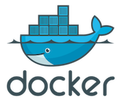
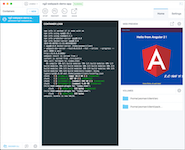

<div class="container p-5">
  <!-- docker -->
  <div class="media">
    
    <div class="media-body">
      <h5 class="mt-0 mb-1">1) Download Docker</h5>
      Get Docker CE from <a href="https://www.docker.com/community-edition" target="_blank">https://www.docker.com/community-edition</a>
      and install it.
    </div>
  </div>

  <hr />

  <!-- terminal -->
  <div class="media my-5">
    <div class="media-body">
      <h5 class="mt-0 mb-1">2) Run your Image</h5>
      Open your <strong>Terminal</strong> and run <code>docker run {{deployment?.image}}</code>
    </div>
    
  </div>

  <hr />

  <!-- kitematic -->
  <div class="media">
    
    <div class="media-body">
      <h5 class="mt-0 mb-1">3) Manage your App</h5>
      Open <strong>Kitematic</strong> (installed with Docker CE) to manage your running containers, as well as
      view logs.
    </div>
  </div>

  <hr />

  <!-- p.s. -->
  <small>
    P.S. You might need to enter Environment Variables through <strong>Kitematic</strong> to make your app work (e.g.
    MongoDB URL)
  </small>
</div>
